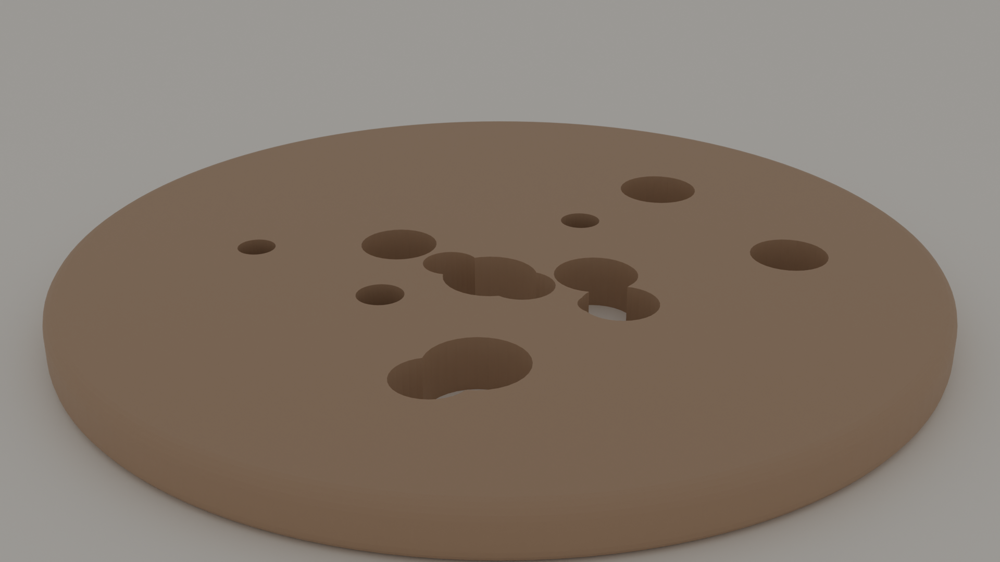
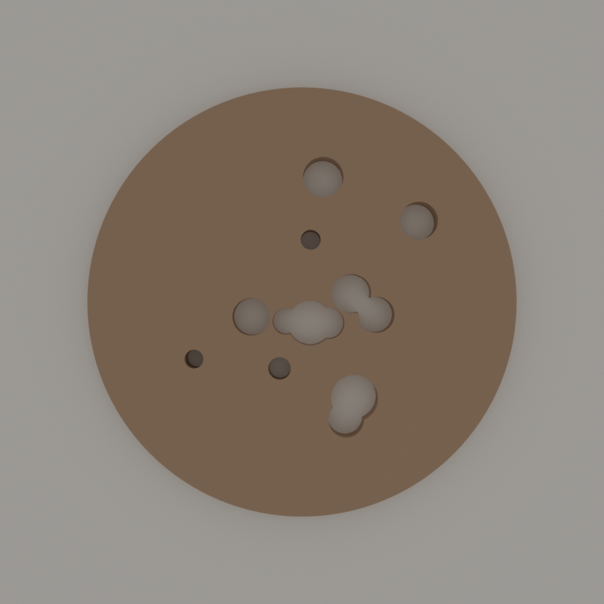

SERIES 01
·
2026
kasane / 重ね
平安時代の女性が着物を重ね着することで色彩を表現した「重ね色」の美意識を、3層の円盤で再解釈。意図的にずらして配置することで、上から見たときに月の満ち欠けや雪の降り重なりを思わせる微細な「ズレ」が生まれる。
MethodProcedural Design (Python)
MaterialPLA (3D Printed)
SizeØ100 × H18 mm
RenderBlender Cycles 64spp
SERIES 02
·
2026
komorebi / 木漏れ日
「木漏れ日」という日本特有の現象 ― 木の葉の隙間から漏れる光が地面に落とす斑紋 ― をプロダクトとして再現。15個の穴を擬似ランダムにアルゴリズムで配置することで、自然の偶然性と人工の規則性が共存する表面を作り出す。穴を通して投影される光のパターンは、設置場所と時間によって変化する。


MethodProcedural + Boolean Operations
MaterialWood / PLA
SizeØ100 × H6 mm
RenderBlender Cycles 64spp